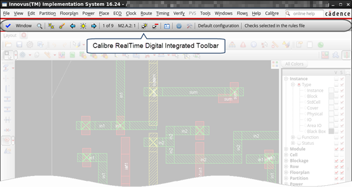

After invoking
Cadence Innovus with Calibre RealTime Digital, you see the Calibre
RealTime Digital integrated toolbar.
Procedure
- Start Cadence Innovus and
open your design. For example:
innovus ‑files "calbr_innovus.tcl proj_setup.tcl" -win -log innovus.log
The -files options loads the both the Calibre integration script (calbr_innovus.tcl)
and a script to load the design data. See “Tcl Script for Calibre Interface to Cadence Innovus” for
information on the integration script. If the integration code is
loaded automatically, such as with the enc.tcl initialization
file, you do not need to load calbr_innovus.tcl on
the command line.
It may take a minute or so
to acquire all licenses and complete the initialization. The following
lines are displayed in the transcript after successful initialization:
// Calibre RealTime: Server initialized successfully at host:port
// Calibre RealTime: Initialization complete
If you do not see the preceding
notices, check that all environment variables are set as described
in “Environment Setup for Calibre RealTime Digital in Cadence Innovus”.
A partial view of the design
window in Cadence Innovus is shown in Figure 1. The Calibre RealTime Digital Integrated Toolbar (Innovus) is loaded.
Figure 1. Calibre RealTime Digital
in Cadence Innovus
- Verify that the RealTime DRC item
was added to the Calibre menu,
as shown in the following figure.
- Proceed to “Specifying and Using Multiple Run Configurations in Calibre RealTime Digital in Cadence Innovus”.